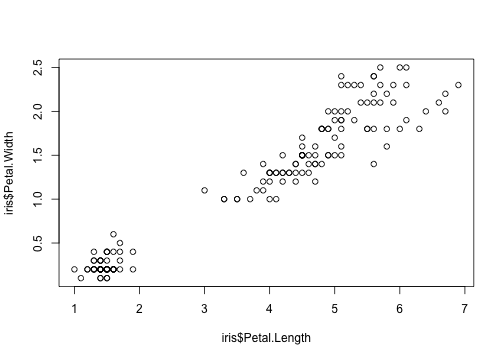
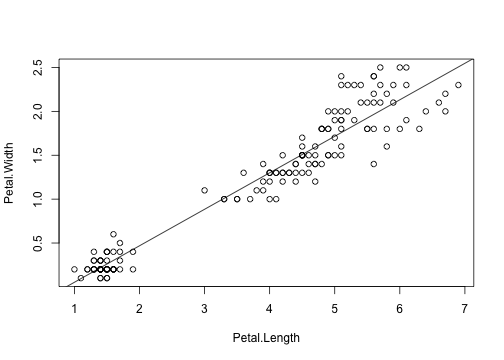

- オープンソース・フリーソフトウェアの統計解析向けのプログラミング言語
- 最小限の労力で見通しよく解析するために工夫された命令体系
- 視覚化に優れたグラフ機能、多くの画像フォーマット・商業印刷品質で出力可能
- Excelやcvsデータの読み込み可能
- 大規模遺伝子発現プロファイルなどを解析するような学術利用実績あり
(WikiPediaより)
ftakao2007
(WikiPediaより)
> a <- 5
> d <- "abc"
> a
[1] 5
> d
[1] "abc"
※ 代入には「=」も使えるが、Rは慣例的に「<-」を使う。
「c」を使う
> a <- c(1,2,3)
> a
[1] 1 2 3
> b <- c(4,5,6)
> a+b
[1] 5 7 9
※ 「c」は適当な変数としては使わない
「matrix」を使う
3行4列の行列に1から12までの数値が入っている例
> matrix(1:12,3,4)
[,1] [,2] [,3] [,4]
[1,] 1 4 7 10
[2,] 2 5 8 11
[3,] 3 6 9 12
> a <- matrix(1:12,3,4)
> a
[,1] [,2] [,3] [,4]
[1,] 1 4 7 10
[2,] 2 5 8 11
[3,] 3 6 9 12
[(行),(列)]です
値の取り出しと計算
> a[1,]
[1] 1 4 7 10
> a[,1]
[1] 1 2 3
> a[1,1]
[1] 1
> a[1,1] * a[1,2]
[1] 4
> a[3,1] * a[1,2]
[1] 12
任意の行列を作るときはrbind,cbindを使う
> x <- rbind(c(1,3,6,9),
+ c(5,10,7,2))
> x
[,1] [,2] [,3] [,4]
[1,] 1 3 6 9
[2,] 5 10 7 2
> x <- cbind(c(1,3,6,9),
+ c(5,10,7,2))
> x
[,1] [,2]
[1,] 1 5
[2,] 3 10
[3,] 6 7
[4,] 9 2
「+」はプロンプトです。この程度であれば1行にすべて書いても問題ないですね。
アヤメのガクヘン(蕚片)と花びらに関するデータでRのサンプルデータとして有名
なiris(詳細は最後の参考リンクを参照)
> iris
Sepal.Length Sepal.Width Petal.Length Petal.Width Species
1 5.1 3.5 1.4 0.2 setosa
2 4.9 3.0 1.4 0.2 setosa
...
> summary(iris)
Sepal.Length Sepal.Width Petal.Length Petal.Width
Min. :4.300 Min. :2.000 Min. :1.000 Min. :0.100
1st Qu.:5.100 1st Qu.:2.800 1st Qu.:1.600 1st Qu.:0.300
Median :5.800 Median :3.000 Median :4.350 Median :1.300
Mean :5.843 Mean :3.057 Mean :3.758 Mean :1.199
3rd Qu.:6.400 3rd Qu.:3.300 3rd Qu.:5.100 3rd Qu.:1.800
Max. :7.900 Max. :4.400 Max. :6.900 Max. :2.500
Species
setosa :50
versicolor:50
virginica :50
> sum(iris[,1]) 合計
[1] 876.5
> mean(iris[,1]) 平均
[1] 5.843333
> sd(iris[,1]) 標準偏差
[1] 0.8280661
> max(iris[,1]) 最大
[1] 7.9
> min(iris[,1]) 最小
[1] 4.3
相関
> cor(iris[,1:4])
Sepal.Length Sepal.Width Petal.Length Petal.Width
Sepal.Length 1.0000000 -0.1175698 0.8717538 0.8179411
Sepal.Width -0.1175698 1.0000000 -0.4284401 -0.3661259
Petal.Length 0.8717538 -0.4284401 1.0000000 0.9628654
Petal.Width 0.8179411 -0.3661259 0.9628654 1.0000000
> cor(iris＄Petal.Length, iris＄Petal.Width)
[1] 0.9628654
0に近いほど相関が無い。同じもの同士の相関は1になる。
Petal.LengthとPetal.Widthは正の相関がある。
グラフ化
plot(iris$Petal.Length, iris$Petal.Width)

plot(iris[,3:4]) と同じ
lm関数を使った回帰分析
> iris.lm <- lm( Petal.Width ~ Petal.Length, data=iris[,3:4] )
> summary(iris.lm)
Call:
lm(formula = Petal.Width ~ Petal.Length, data = iris[, 3:4])
Residuals:
Min 1Q Median 3Q Max
-0.56515 -0.12358 -0.01898 0.13288 0.64272
Coefficients:
Estimate Std. Error t value Pr(>|t|)
(Intercept) -0.363076 0.039762 -9.131 4.7e-16 ***
Petal.Length 0.415755 0.009582 43.387 < 2e-16 ***
---
Signif. codes: 0 ‘***’ 0.001 ‘**’ 0.01 ‘*’ 0.05 ‘.’ 0.1 ‘ ’ 1
Residual standard error: 0.2065 on 148 degrees of freedom
Multiple R-squared: 0.9271, Adjusted R-squared: 0.9266
F-statistic: 1882 on 1 and 148 DF, p-value: < 2.2e-16
Estimateのところが係数など。この例では Petal.Widthをy, Petal.Lengthをxとして回帰式は
y = 0.415755x - 0.363076
となります。
(詳細は最後の参考リンクを参照)
図示
iris.lm <- lm(Petal.Width ~ Petal.Length, data = iris[, 3:4])
plot(Petal.Width ~ Petal.Length, data = iris[, 3:4])
abline(iris.lm)

終わりですm(_ _)m
seekR (Rに関する検索がやりやすい)
http://seekr.jp
irisについて
http://monge.tec.fukuoka-u.ac.jp/r_analysis/analysis_iris00.html
Rで線形単回帰分析
http://d.hatena.ne.jp/matsuou1/20110418/1303144024
おまけ
グリグリ動く図が書ける。
インストール
sudo でRを起動
% sudo r
> options(repos="http://cran.r-project.org/")
→ミラーサイトだと失敗することがあるのでとりあえず本家を設定
> install.packages("devtools")
> library(devtools)
> install_github('rCharts', 'ramnathv')
使ってみる
※一旦Rを出て一般ユーザで実行
> q()
% r
> library(rCharts)
> x<-subset(as.data.frame(HairEyeColor),Sex=="Male")
> nPlot(Freq~Hair,group="Eye",data=x,type='multiBarChart')
おまけ2
このプレゼン資料はこれで作ってます。
インストール
sudo でRを起動
% sudo r
> options(repos="http://cran.r-project.org/")
> install.packages("devtools") <- ※rChartsでインストール済みの場合は不要
> library(devtools)
> install_github('slidify','ramnathv')
> install_github('slidifyLibraries','ramnathv')
使い方
※一旦Rを出て一般ユーザで実行
> q()
% r
> library(slidify)
> library(slidifyLibraries)
> author("slidify_test")
エディタが起動するので適当に編集して保存して
> slidify("index.Rmd")
これでindex.htmlができるのでブラウザでアクセスする。
編集は別ターミナルでindex.Rmdをエディタで編集し、 Rを起動しているターミナルで
> slidify("index.Rmd")
を実行する。
(もっとスマートなやり方がありそう)
おまけも終わりですm(_ _)m
rCharts
http://rcharts.io
Slidify
http://slidify.org
R上でスライド作成
http://qh73xe.jimdo.com/プロット/パッケージslidify/
可視化周辺の進化がヤヴァイ
http://www.slideshare.net/teramonagi/tokyo-r31-20130601